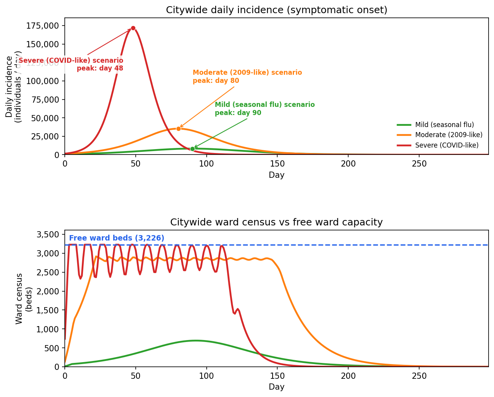

Scenario comparison
Fixed illustrative runs under three transmission scenarios: citywide epidemic scale, ward-bed pressure, then which hospital systems and ZIPs are most stressed.
These tables use the fixed scenario parameter sets below. To test other parameter sets and see how citywide stress changes, open the Shiny app.
Model assumptions (fixed scenario parameters)
Mid values from the project parameter registry. Shared occupancy and hospital-routing rules apply to all three scenarios. Full inventory (in presented results, slider status, midpoint [low, high]): parameter table.
| Parameter | Mild (seasonal flu) | Moderate (2009-like) | Severe (COVID-like) |
|---|---|---|---|
| R₀ | 1.25 | 1.5 | 3 |
| P(symptomatic | infection) | 25% | 50% | 70% |
| Hospitalization | case | 1.4% | 10% | 50% |
| ICU | hospitalization | 17% | 20% | 30% |
| LOS ward if discharged (days) | 6 | 7.5 | 9.5 |
| LOS ward if died (days) | 6 | 7.5 | 9.5 |
| LOS ICU if discharged (days) | 7 | 8.5 | 11 |
| LOS ICU if died (days) | 7 | 8.5 | 11 |
| In-hospital death | ward-only | 0% | 0% | 0% |
| In-hospital death | ICU | 0% | 0% | 0% |
| CFR (symptomatic) | 0.1% | 0.1% | 3% |
Citywide incidence and ward demand

Hospital systems (by assigned ZIP cases)
Hospital systems with the most cases among ZIP codes assigned to their hospitals.
DOH INDEPENDENT campuses are listed separately by facility name
(not pooled as one system).
| Top hospital system | Mild (seasonal flu) | Moderate (2009-like) | Severe (COVID-like) | |||
|---|---|---|---|---|---|---|
| System | Cases | System | Cases | System | Cases | |
| #1 | NYC H+H | 191,608 | NYC H+H | 595,241 | NYC H+H | 1,341,939 |
| #2 | NEW YORK - PRESBYTERIAN | 90,538 | NEW YORK - PRESBYTERIAN | 281,261 | NEW YORK - PRESBYTERIAN | 634,087 |
| #3 | MOUNT SINAI HEALTH SYSTEM | 82,177 | MOUNT SINAI HEALTH SYSTEM | 255,289 | MOUNT SINAI HEALTH SYSTEM | 575,535 |
Hospital systems (by ward admissions, including overflow)
Hospital systems with the most ward admissions after redirecting overflow from full hospitals. Independent campuses are ranked individually by facility name.
| Top hospital system | Mild (seasonal flu) | Moderate (2009-like) | Severe (COVID-like) | |||
|---|---|---|---|---|---|---|
| System | Ward admits | System | Ward admits | System | Ward admits | |
| #1 | NYC H+H | 2,667 | NYC H+H | 14,825 | NYC H+H | 9,233 |
| #2 | NEW YORK - PRESBYTERIAN | 1,260 | NEW YORK - PRESBYTERIAN | 10,585 | NEW YORK - PRESBYTERIAN | 6,784 |
| #3 | MOUNT SINAI HEALTH SYSTEM | 1,144 | MOUNT SINAI HEALTH SYSTEM | 6,754 | MOUNT SINAI HEALTH SYSTEM | 4,333 |
Most vulnerable (high cases / low free acute beds) ZIPs
Rank order, ZIP, free beds, and assigned hospital are the same across scenarios. Cases and ratios scale with each scenario.

| # | ZIP | Free acute beds | Assigned hospital | Mild (seasonal flu) | Moderate (2009-like) | Severe (COVID-like) | |||
|---|---|---|---|---|---|---|---|---|---|
| Cases | Ratio | Cases | Ratio | Cases | Ratio | ||||
| #1 | 11230 | 24 | MAIMONIDES MIDWOOD COMMUNITY (1293) | 9,477 | 391.6 | 29,442 | 1,216.6 | 66,376 | 2,742.8 |
| #2 | 10456 | 29 | BRONXCARE CENTER FULTON MANDY (1164) | 10,350 | 358.1 | 32,151 | 1,112.5 | 72,484 | 2,508.1 |
| #3 | 11229 | 24 | MAIMONIDES MIDWOOD COMMUNITY (1293) | 7,625 | 315.1 | 23,689 | 978.9 | 53,405 | 2,206.8 |
| #4 | 10002 | 30 | NYP: LOWER MANHATTAN (1437) | 8,967 | 301.9 | 27,858 | 938.0 | 62,804 | 2,114.6 |
| #5 | 11385 | 34 | WYCKOFF HEIGHTS MC (1318) | 9,992 | 294.7 | 31,040 | 915.6 | 69,977 | 2,064.2 |
Vulnerability ratio = cumulative ZIP cases ÷ free acute beds at the assigned hospital. Free acute beds = staffed beds × (1 − ward occupancy). Illustrative analyses — not clinical guidance.